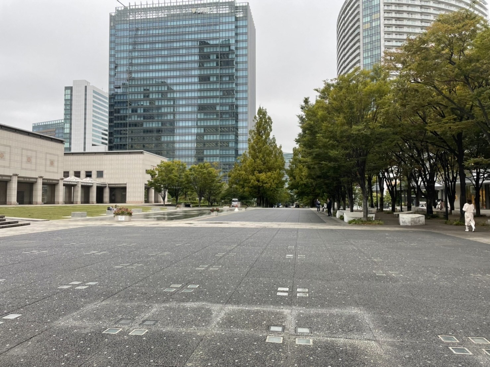
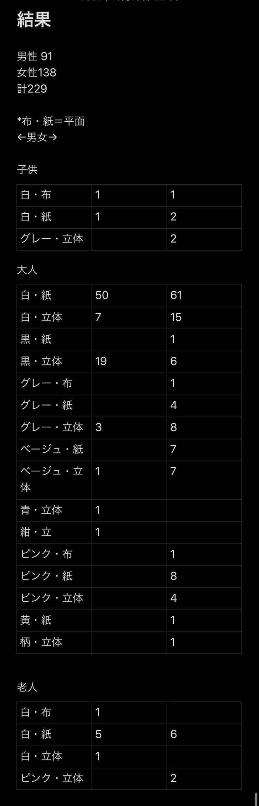

第4回課題 フィールドワーク結果
前回の復習
観察のテーマ
観察のテーマ・・・衣
衣の中でもマスクについて調べることにしました。
観察ポイント
・どんな色か
・どんな種類か
・どんな形か
・性別
このようなことを主に見ていきたいと思います。
観察場所
観察場所はマークイズ前の広場で観察しようと計画しています。

観察結果(10月19日火曜日)
①観察前の考察
・平面的な白色の紙のマスク(一般的なマスク）が多いのではないか。
・次に立体的な黒の布マスクが多いのではないか。
・この二つ意外はほとんどないだろう。
②結果

・一番多かったのは老若男女問わず白色の紙マスク（一般的なマスク）だった。
・男子は2番目に立体的な黒色のマスク、3番目に白色の立体的なマスクだった。
・女子は2番目に白の立体的なマスク（韓国マスク）、3番目にグレーの立体、ピンクの紙マスクだった。
・男性は白黒が多数、女性の方がピンクや黄色など比較的色彩豊かなマスクをつけていた。
・色のついたマスクは若年層に集中していた。
・柄物、派手なマスクは服装の派手な女性と小さな子供に見られた。
③観察後の考察
・だいたいは観察前の考察通りの結果になったが思ったより多様なマスクをつけていた。
・女性の中で色彩豊かなマスクをつけている人が多いのは、その日のファッションに合わせていると（女性はマスクもファッションの一部と考えている）と考えた。
逆に男性の中でシンプルなマスクを付けている人が多いのは、比較的着けなければいけないという義務感が強く、あまりマスクに興味がないからだと考えた。
また、男性はスーツなどのシンプルな服装が多いため、マスクもシンプルにしているのではないかと考えた。
このようなことから、比較的男性より女性の方がファッションの細かいところまでこだわっている人が多く、マスク自体も女性に似合うマスクの方が多いと考えられる。
・女性の中で韓国マスクを付けている人が2番目に多かったのは、ＢＴＳをはじめとするK-POPアイドルの流行が影響していると考えた。
・子供や老人はファッションという概念が薄いため、一般的なマスクが多かったと考えられる。
デザイン演習Ⅰ・Ⅱトップページ
XBPトップページ